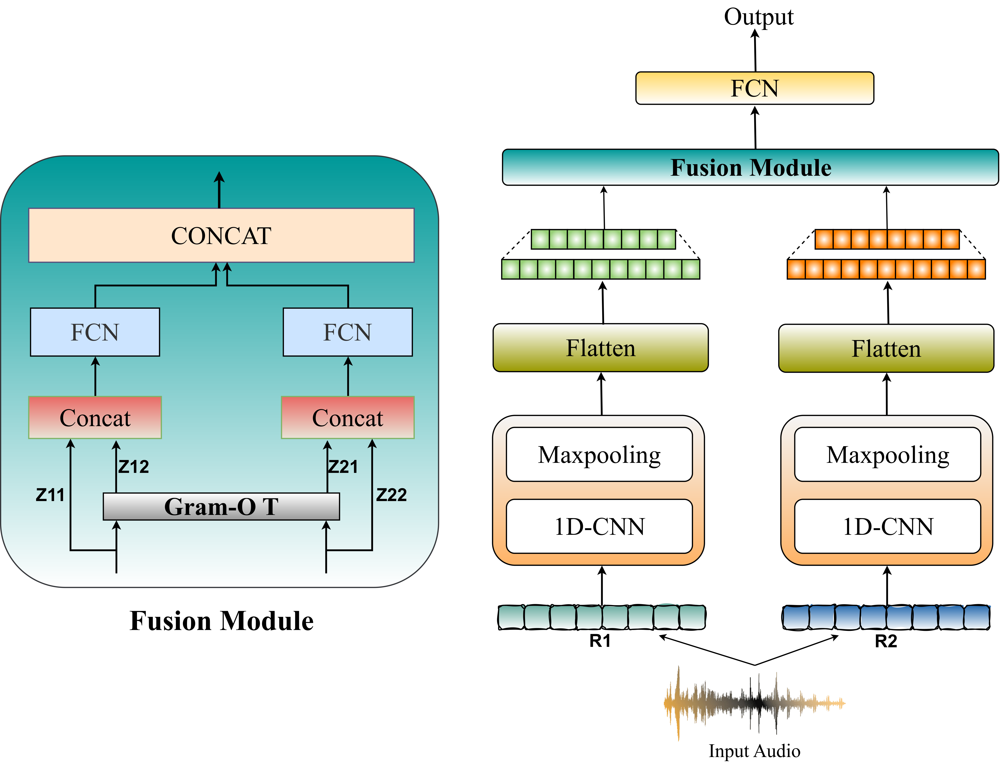

Heart sounds (phonocardiograms, PCGs) have been regarded as a promising biometric modality due to their natural resilience against traditional spoofing methods. We show that neural audio codecs (NACs) can synthesize heart sounds that are perceptually indistinguishable from genuine recordings, introduce the Synthetic Heart Sound Detection (SHAC) task and the CARDIOFAKE dataset, and propose GROOT, a Gram-OT based fusion of spectral and SSL representations for detecting these codec-synthesized heart sounds.
CARDIOFAKE comprises 3,163 real heart sounds and 22,141 NAC-generated counterparts across 7 codec families, with seen (SNAC, DAC, EnCodec, SoundStream, SpeechTokenizer) and unseen (FunCodec, AudioDec) test protocols.
In this paper, we introduce Synthetic Heart Sound Detection (SHAC), a task aimed at identifying phonocardiograms (PCGs) synthesized using neural audio codecs (NACs). To facilitate research in this direction, we release CARDIOFAKE, the first benchmark dataset for SHAC containing both real and codec-synthesized PCGs.
We benchmark spectral representations (MFCC, LFCC) and self-supervised learning (SSL) representations (e.g., WavLM) for the task. Furthermore, we propose GROOT, a fusion framework that integrates spectral and SSL features for leveraging their complementary behavior.
Experiments show that GROOT, combining MFCC and WavLM, achieves state-of-the-art performance, outperforming individual representations and competitive baselines.
GROOT (Fusion via GRammian Optimal TranspOrT) fuses spectral and SSL representations for SHAC. Spectral features (MFCC, LFCC) are highly sensitive to NAC-induced distortions at the acoustic level, while SSL representations (Wav2vec2, UniSpeech-SAT, WavLM) capture broader temporal structure and variability in heart sounds. GROOT aligns these complementary representations using a novel grammian optimal transport mechanism that compares representations through their gram matrices rather than raw features.
14-dim LFCC and 40-dim MFCC are extracted as spectral features. Wav2vec2, UniSpeech-SAT, and WavLM are used as SSL representations, each producing 768-dim features via average pooling over the final hidden layer.
Each representation (R1, R2) is passed through a 1D-CNN block (32 filters) followed by max-pooling, then flattened and linearly projected to a 120-dimensional vector.
Gram matrices GR1 = R1 R1^T and GR2 = R2 R2^T capture correlations between features and reflect global relational patterns, such as rhythm, across each representation space.
A cost matrix is built from the Frobenius distance between the two gram matrices, and the Sinkhorn algorithm computes an optimal transport plan to align the two representation spaces.
Transported features are concatenated with their original representations to form F1 and F2, passed through parallel FCNs, concatenated again, and classified by a final FCN with a sigmoid output for real-vs-spoof detection.

Figure: The GROOT framework. Two representation branches (R1, R2) are each processed by a 1D-CNN and max-pooling, flattened, and aligned via the Gram-OT fusion module before classification.
Gram-OT Alignment
The fused representations F1 and F2 are passed through FCNs with a dense layer of 80 neurons each, concatenated, and processed by a final FCN (120 and 30 neurons) with a sigmoid output layer for binary classification.
Binary real-vs-spoof detection of neural-audio-codec-synthesized phonocardiograms.
A novel grammian optimal transport mechanism aligning representations via their gram matrices.
MFCC and LFCC capture acoustic-level codec distortions; WavLM and Wav2vec2 capture temporal structure.
Lightweight CNN and max-pooling per branch followed by fusion and a fully connected classifier.
GROOT with MFCC + WavLM sets a new SOTA for the SHAC task (Seen condition).
Establishes the first benchmark and baselines for detecting NAC-synthesized heart sounds.
Table 1: Individual representations for SHAC
CNN-based downstream models consistently outperform their FCN counterparts. Among individual representations, WavLM with CNN is the strongest performer, and SSL features consistently outperform spectral features (MFCC, LFCC) in both Seen and Unseen conditions.
| Representation | FCN | CNN | ||
|---|---|---|---|---|
| ACC | EER | ACC | EER | |
| Seen | ||||
| LFCC | 76.99 | 15.19 | 79.02 | 14.96 |
| MFCC | 77.82 | 15.04 | 81.56 | 12.55 |
| Wav2vec2 | 83.62 | 12.13 | 86.65 | 10.37 |
| UniSpeech-SAT | 80.30 | 12.30 | 82.81 | 11.59 |
| WavLM | 84.54 | 12.51 | 87.72 | 9.45 |
| Unseen | ||||
| LFCC | 72.45 | 18.93 | 73.99 | 18.08 |
| MFCC | 74.93 | 17.60 | 78.74 | 16.91 |
| Wav2vec2 | 79.56 | 16.03 | 83.61 | 13.74 |
| UniSpeech-SAT | 74.02 | 18.07 | 78.47 | 18.69 |
| WavLM | 80.54 | 15.01 | 84.02 | 13.39 |
Accuracy (ACC, higher is better) and Equal Error Rate (EER, lower is better) in %, for Seen and Unseen conditions.
Table 2: Fusion of representations
GROOT consistently achieves the best overall performance across both Seen and Unseen conditions. Heterogeneous fusion of spectral and SSL representations outperforms homogeneous fusion, and the best performance is achieved by fusing MFCC and WavLM through GROOT.
| Pair | Concat | OT | GROOT | |||
|---|---|---|---|---|---|---|
| ACC | EER | ACC | EER | ACC | EER | |
| Seen | ||||||
| LFCC + MFCC | 80.05 | 11.82 | 82.41 | 10.91 | 84.61 | 8.35 |
| LFCC + Wav2vec2 | 86.18 | 8.72 | 88.93 | 8.10 | 90.50 | 7.42 |
| LFCC + UniSpeech-SAT | 81.12 | 12.00 | 84.50 | 11.18 | 87.09 | 9.63 |
| LFCC + WavLM | 86.32 | 7.18 | 88.36 | 7.03 | 91.77 | 6.06 |
| MFCC + Wav2vec2 | 86.57 | 7.20 | 88.82 | 6.87 | 90.83 | 6.14 |
| MFCC + UniSpeech-SAT | 84.00 | 11.23 | 85.88 | 11.22 | 87.90 | 9.72 |
| MFCC + WavLM | 87.70 | 7.40 | 89.07 | 6.86 | 93.20 | 5.86 |
| Wav2vec2 + UniSpeech-SAT | 86.99 | 9.87 | 87.79 | 9.06 | 89.00 | 8.61 |
| Wav2vec2 + WavLM | 86.26 | 8.32 | 88.92 | 7.82 | 91.60 | 6.20 |
| UniSpeech-SAT + WavLM | 85.01 | 10.54 | 86.23 | 8.92 | 88.74 | 7.55 |
| Unseen | ||||||
| LFCC + MFCC | 79.28 | 16.70 | 81.87 | 15.22 | 83.70 | 13.99 |
| LFCC + Wav2vec2 | 84.11 | 12.34 | 84.25 | 10.83 | 86.00 | 9.87 |
| LFCC + UniSpeech-SAT | 79.05 | 17.98 | 80.47 | 16.00 | 82.39 | 14.80 |
| LFCC + WavLM | 81.22 | 13.27 | 83.01 | 12.87 | 85.31 | 10.98 |
| MFCC + Wav2vec2 | 81.00 | 12.08 | 84.72 | 10.34 | 85.78 | 10.70 |
| MFCC + UniSpeech-SAT | 80.72 | 14.89 | 81.51 | 13.70 | 83.04 | 11.49 |
| MFCC + WavLM | 84.33 | 13.11 | 84.99 | 12.06 | 86.10 | 9.75 |
| Wav2vec2 + UniSpeech-SAT | 83.11 | 13.38 | 84.20 | 12.40 | 85.81 | 11.13 |
| Wav2vec2 + WavLM | 83.97 | 12.90 | 84.09 | 11.29 | 85.70 | 10.00 |
| UniSpeech-SAT + WavLM | 81.02 | 15.80 | 82.68 | 14.10 | 84.48 | 12.51 |
Accuracy (ACC, higher is better) and Equal Error Rate (EER, lower is better) in %. OT: Optimal Transport baseline (same architecture as GROOT, without Gram-OT).
Comparison to SOTA Audio Deepfake Baselines
GROOT (MFCC + WavLM) is compared against AASIST and MiO, strong general audio deepfake detection baselines, trained under the same configuration.
| Model | Seen | Unseen | ||
|---|---|---|---|---|
| ACC | EER | ACC | EER | |
| AASIST | 85.15 | 14.91 | 73.13 | 16.43 |
| MiO | 86.98 | 12.34 | 75.89 | 14.09 |
| GROOT (MFCC + WavLM) | 93.20 | 5.86 | 86.10 | 9.75 |
Accuracy (ACC, higher is better) and Equal Error Rate (EER, lower is better) in %.
CARDIOFAKE pairs authentic phonocardiograms with codec-resynthesized counterparts produced by 7 neural audio codec families, with dedicated seen and unseen evaluation protocols.
963 patients, each labeled Present, Absent, or Unknown. 3,163 phonocardiogram recordings with durations from 5 to 65 seconds.
Source recordingsUsed to generate CF samples for the training, validation, and seen test splits.
Codec backbonesHeld-out codecs used only at test time to evaluate generalization to unseen NACs.
Codec backbones3,163 real heart sounds paired with 22,141 NAC-generated counterparts across 7 codec families (seen + unseen).
Real + Spoof pairsSample rows below are loaded from audio/manifest.js. Each row pairs a real heart sound recording with its codec-generated counterpart.
| Codec | Ground Truth ID | GT Heart Sound | Generated Heart Sound | Source |
|---|
If you use the CARDIOFAKE dataset or GROOT, please cite the paper as follows:
Update page numbers in the citation once the proceedings version is finalized.